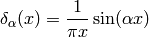
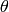
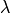

Polar and Spherical Coordinates¶
Polar coordinates (radial, azimuth) are defined by
Spherical coordinates (radial, zenith, azimuth) :
Note: this meaning of is mostly used in the USA and in many books. In Europe people usually use different symbols, like , and others.
Argument function, atan2¶
Argument function is any such that
Obviously is unique up to any integer multiple of  . By taking
the principal value of the function, e.g. fixing to the
interval , we get the function:
. By taking
the principal value of the function, e.g. fixing to the
interval , we get the function:

then  , where . We can then
use the following formula to easily calculate for any (except
, i.e. ):
, where . We can then
use the following formula to easily calculate for any (except
, i.e. ):
Finally we define as:

The angle is the angle of the point  on the unit
circle (assuming the usual conventions), and it works for all quadrants
(
on the unit
circle (assuming the usual conventions), and it works for all quadrants
( only works for the first and fourth quadrant, where
, but in the second and third qudrant,
gives the wrong angles, while gives the correct angles). So in
particular:
only works for the first and fourth quadrant, where
, but in the second and third qudrant,
gives the wrong angles, while gives the correct angles). So in
particular:
This convention () is used for example in Python, C or Fortran.
Some people might interchange  with
with  in the definition (i.e. ), but it is not very common.
in the definition (i.e. ), but it is not very common.
The following useful relations hold:
We now prove them. The following works for all except for :
![\sin\atan2(y, x)
=\begin{cases}\sin\pi&y=0;x<0;\cr
\sin\left(2\,\atan{y\over\sqrt{x^2+y^2}+x}\right)
&\rm otherwise\cr\end{cases}
=
=\begin{cases}0&y=0;x<0;\cr
{y\over \sqrt{x^2+y^2}}&\rm otherwise\cr\end{cases}
=
=\begin{cases}{y\over \sqrt{x^2+y^2}}&y=0;x<0;\cr
{y\over \sqrt{x^2+y^2}}&\rm otherwise\cr\end{cases}
={y\over \sqrt{x^2+y^2}}
\cos\atan2(y, x)
=\begin{cases}\cos\pi&y=0;x<0;\cr
\cos\left(2\,\atan{y\over\sqrt{x^2+y^2}+x}\right)
&\rm otherwise\cr\end{cases}
=
=\begin{cases}-1&y=0;x<0;\cr
{x\over \sqrt{x^2+y^2}}&\rm otherwise\cr\end{cases}
=
=\begin{cases}{x\over \sqrt{x^2+y^2}}&y=0;x<0;\cr
{x\over \sqrt{x^2+y^2}}&\rm otherwise\cr\end{cases}
={x\over \sqrt{x^2+y^2}}](../../_images/math/708dc04823619641f1026d08832b162bad459691.png)
Tangent is infinite for , which corresponds to , so the following works for all :
In the above, we used the following double angle formulas:
to simplify the following expressions:
![\sin\left(2\,\atan{y\over\sqrt{x^2+y^2}+x}\right) =
{2\tan\atan{y\over\sqrt{x^2+y^2}+x}\over1+\tan^2\atan{y\over\sqrt{x^2+y^2}+x}}
=
=
{2{y\over\sqrt{x^2+y^2}+x}\over1
+\left({y\over\sqrt{x^2+y^2}+x}\right)^2}
=
{2y\left(\sqrt{x^2+y^2}+x\right)\over
\left(\sqrt{x^2+y^2}+x\right)^2+y^2}
=
=
{y\left(\sqrt{x^2+y^2}+x\right)\over
x^2+y^2+x\sqrt{x^2+y^2}}
=
{y\left(\sqrt{x^2+y^2}+x\right)\over
\sqrt{x^2+y^2}\left(\sqrt{x^2+y^2}+x\right)}
=
=
{y\over\sqrt{x^2+y^2}}
\cos\left(2\,\atan{y\over\sqrt{x^2+y^2}+x}\right) =
{1-\tan^2\atan{y\over\sqrt{x^2+y^2}+x}\over1+\tan^2\atan{y\over\sqrt{x^2+y^2}+x}}
=
=
{1 -\left({y\over\sqrt{x^2+y^2}+x}\right)^2\over
1 +\left({y\over\sqrt{x^2+y^2}+x}\right)^2}
=
{\left(\sqrt{x^2+y^2}+x\right)^2-y^2\over
\left(\sqrt{x^2+y^2}+x\right)^2+y^2}
=
=
{x\left(\sqrt{x^2+y^2}+x\right)\over
x^2+y^2+x\sqrt{x^2+y^2}}
=
{x\left(\sqrt{x^2+y^2}+x\right)\over
\sqrt{x^2+y^2}\left(\sqrt{x^2+y^2}+x\right)}
=
=
{x\over\sqrt{x^2+y^2}}
\tan\left(2\,\atan{y\over\sqrt{x^2+y^2}+x}\right) =
{2\tan\atan{y\over\sqrt{x^2+y^2}+x}\over1-\tan^2\atan{y\over\sqrt{x^2+y^2}+x}}
=
=
{2{y\over\sqrt{x^2+y^2}+x}\over1
-\left({y\over\sqrt{x^2+y^2}+x}\right)^2}
=
{2y\left(\sqrt{x^2+y^2}+x\right)\over
\left(\sqrt{x^2+y^2}+x\right)^2-y^2}
=
=
{y\left(\sqrt{x^2+y^2}+x\right)\over
x\left(\sqrt{x^2+y^2}+x\right)}
= {y\over x}](../../_images/math/58f593e12cc1ff077f482fd844e71589f891d1b0.png)
Finally, for all we get:
An example of an application:
where
Delta Function¶
Delta function is defined such that this relation holds:
(1)
No such function exists, but one can find many sequences “converging” to a delta function:
(2)
more precisely:
(3)
one example of such a sequence is:

It’s clear that (3) holds for any well behaved function  .
Some mathematicians like to say that it’s incorrect to use such a notation when
in fact the integral (1) doesn’t “exist”, but we will not follow
their approach, because it is not important if something “exists” or not,
but rather if it is clear what we mean by our notation: (1) is a
shorthand for (3) and (2) gets a mathematically rigorous
meaning when you integrate both sides and use (1) to arrive at
(3). Thus one uses the relations (1), (2),
(3) to derive all properties of the delta function.
.
Some mathematicians like to say that it’s incorrect to use such a notation when
in fact the integral (1) doesn’t “exist”, but we will not follow
their approach, because it is not important if something “exists” or not,
but rather if it is clear what we mean by our notation: (1) is a
shorthand for (3) and (2) gets a mathematically rigorous
meaning when you integrate both sides and use (1) to arrive at
(3). Thus one uses the relations (1), (2),
(3) to derive all properties of the delta function.
Let’s give an example. Let be the unit vector in 3D and we can label it using spherical coordinates . We can also express it in cartesian coordinates as .
(4)
Expressing as a function of  and  we have
we have
(5)
Expressing (4) in spherical coordinates we get
and comparing to (5) we finally get
In exactly the same manner we get
See also (6) for an example of how to deal with more complex expressions involving the delta function like .
Distributions¶
Some mathematicians like to use distributions and a mathematical notation for that, which I think is making things less clear, but nevertheless it’s important to understand it too, so the notation is explained in this section, but I discourage to use it – I suggest to only use the physical notation as explained below. The math notation below is put into quotation marks, so that it’s not confused with the physical notation.
The distribution is a functional and each function can be identified
with a distribution that it generates using this definition (
is a test function):
besides that, one can also define distributions that can’t be identified with regular functions, one example is a delta distribution (Dirac delta function):
The last integral is not used in mathematics, in physics on the other hand, the first expressions () is not used, so always means that you have to integrate it, as explained in the previous section, so it behaves like a regular function (except that such a function doesn’t exist and the precise mathematical meaning is only after you integrate it, or through the identification above with distributions).
One then defines common operations via acting on the generating function, then observes the pattern and defines it for all distributions. For example differentiation:

so:
Multiplication:
so:
Fourier transform:
so:
But as you can see, the notation is just making things more complex, since it’s enough to just work with the integrals and forget about the rest. One can then even omit the integrals, with the understanding that they are implicit.
Some more examples:
Proof of :
Proof of :
Proof of :
Variations and Functional Derivatives¶
Functional derivatives are a common source of confusion and especially the notation. The reason is similar to the delta function — the definition is operational, i.e. it tells you what operations you need to do to get a mathematically precise formula. The notation below is commonly used in physics and in our opinion it is perfectly precise and exact, but some mathematicians may not like it.
Let’s have . The function assigns a number to each  . We define a differential of
. We define a differential of  as
as
The last equality follows from the fact, that is a linear function of . We define as
This also gives a formula for computing : we set and
But this is just the way the partial derivative is usually defined. Every variable can be treated as a function (very simple one):
and so we define
and thus we write and and
So has two meanings — it’s either (a finite change in the independent variable ) or a differential, depending on the context. Even mathematicians use this notation.
Functional assigns a number to each function . The variation is defined as
We define as
This also gives a formula for computing : we set and
Every function can be treated as a functional (although a very simple one):
and so we define
thus we write and
![\delta F[f]=\int {\delta F\over\delta f(x)}\delta f(x)\d x](../../_images/math/fa073632306ec146fbbaab3afd4d93610653f6e3.png)
so have two meanings — it’s either
(a finite change in the function ) or a variation
of a functional, depending on the context. Some mathematicians don’t like to
write in the meaning of , they prefer to write the latter, but
it is in fact perfectly fine to use , because it is completely analogous to .
The correspondence between the finite and infinite dimensional case can be summarized as:
More generally, -variation can by applied to any function  which contains the function being varied, you just need to replace by and apply to the whole , for example (here and ):
which contains the function being varied, you just need to replace by and apply to the whole , for example (here and ):
This notation allows us a very convinient computation, as shown in the following examples. First, when computing a variation of some integral, when can interchange and  :
:
In the expression we must understand from the context if we are treating it as a functional of or  . In our case it’s a functional of , so we have .
. In our case it’s a functional of , so we have .
A few more examples:
The last equality follows from  (any antisymmetrical part of a would not contribute to the symmetrical integration).
(any antisymmetrical part of a would not contribute to the symmetrical integration).
Another example is the derivation of Euler-Lagrange equations for the Lagrangian density :
![0 = \delta I = \delta \int \L \,\d^4x^\mu
= \int \partial \L \,\d^4x^\mu
= \int { \partial \L\over\partial \eta_\rho}\delta\eta_\rho
+
{ \partial \L\over\partial (\partial_\nu \eta_\rho)}
\delta(\partial_\nu\eta_\rho)
\,\d^4x^\mu
=
= \int { \partial \L\over\partial \eta_\rho}\delta\eta_\rho
+
{ \partial \L\over\partial (\partial_\nu \eta_\rho)}
\partial_\nu(\delta\eta_\rho)
\,\d^4x^\mu
=
= \int { \partial \L\over\partial \eta_\rho}\delta\eta_\rho
-
\partial_\nu\left(
{ \partial \L\over\partial (\partial_\nu \eta_\rho)}
\right)
\delta\eta_\rho
\,\d^4x^\mu
+\int \partial_\nu \left(
{ \partial \L\over\partial (\partial_\nu \eta_\rho)}
\delta\eta_\rho
\right)
\,\d^4x^\mu
=
= \int \left[{ \partial \L\over\partial \eta_\rho}
-
\partial_\nu\left(
{ \partial \L\over\partial (\partial_\nu \eta_\rho)}
\right)
\right]
\delta\eta_\rho
\,\d^4x^\mu](../../_images/math/ca3df7ea8ec0fdf676a58b601e6200e37f07ab31.png)
Another example:
Some mathematicians would say the above calculation is incorrect, because is undefined. But that’s not exactly true, because in case of such problems the above notation automatically implies working with some sequence (for example ) and taking the limit :
(6)
As you can see, we got the same result, with the same rigor, but using an obfuscating notation. That’s why such obvious manipulations with  are tacitly implied.
are tacitly implied.
Spherical Harmonics¶
Are defined by
where are associated Legendre polynomials defined by
and are Legendre polynomials defined by the formula
they also obey the completeness relation
(7)
The spherical harmonics are ortonormal:
(8)
and complete (both in the  -subspace and the whole space):
-subspace and the whole space):
(9)
(10)
The relation (9) is a special case of an addition theorem for spherical harmonics
(11)
where  is the angle between the unit vectors given by and :
is the angle between the unit vectors given by and :
Dirac Notation¶
The Dirac notation allows a very compact and powerful way of writing equations that describe a function expansion into a basis, both discrete (e.g. a fourier series expansion) and continuous (e.g. a fourier transform) and related things. The notation is designed so that it is very easy to remember and it just guides you to write the correct equation.
Let’s have a function . We define
The following equation
then becomes
and thus we can interpret  as a vector, as a basis and as the coefficients in the basis expansion:
as a vector, as a basis and as the coefficients in the basis expansion:
That’s all there is to it. Take the above rules as the operational definition
of the Dirac notation. It’s like with the delta function - written alone it
doesn’t have any meaning, but there are clear and non-ambiguous rules to
convert any expression with to an expression which even mathematicians
understand (i.e. integrating, applying test functions and using other relations
to get rid of all symbols in the expression – but the result is
usually much more complicated than the original formula). It’s the same with
the ket : written alone it doesn’t have any meaning, but you can
always use the above rules to get an expression that make sense to everyone
(i.e. attaching any bra to the left and rewriting all brackets
with their equivalent expressions) – but it will be more complex and harder to
remember and – that is important – less general.
Now, let’s look at the spherical harmonics:
on the unit sphere, we have
thus
and from (8) we get
now
from (10) we get
so we have

so forms an orthonormal basis. Any function defined on the sphere can be written using this basis:
where
If we have a function in 3D, we can write it as a function of  and and expand only with respect to the variable :
and and expand only with respect to the variable :
In Dirac notation we are doing the following: we decompose the space into the angular and radial part
and write
where
Let’s calculate
so

We must stress that only acts in the space (not the space) which means that
and leaves intact. Similarly,
is a unity in the  space only (i.e. on the unit sphere).
space only (i.e. on the unit sphere).
Let’s rewrite the equation (11):

Using the completeness relation (7):
we can now derive a very important formula true for every function :
where
or written explicitly
(12)
Homogeneous functions¶
A function of several variables is
homogeneous of degree  if
if
By differentiating with respect to :
and setting we get the so called Euler equation:
in 3D this can also be written as:
Example¶
The function is homogeneous of degree 1, because:
and the Euler equation is:
or

Which obviously is true.